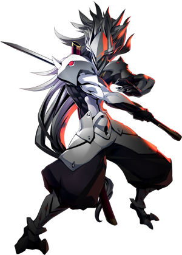

◈ SIX HEROES · PARRY MASTER
Hakumen
BlazBlue: Entropy Effect — Персонаж
85
Атака
95
Защита
45
Скорость
95
HP
★★☆
Сложность
Ближний
Тип боя
Hakumen — персонаж, специализирующийся на парировании. Он способен парировать практически любую атаку и возвращать её десятикратно. С навыком Kokuujin: Yukikaze Hakumen принимает защитную стойку, которая контратакует любой полученный урон, отправляя его вперёд с чрезвычайно длинным горизонтальным разрезом. С улучшениями потенциалов Hakumen превращается из медленного в одного из самых мобильных персонажей в игре.[reference:20]
Kokuujin: Yukikaze
Battle Hardened
Super Armor

01
Досье персонажа
Имя
Hakumen (ハクメン)
Титул
Лидер Шести Героев / Void Warrior
Оружие
Interfectum Malus: Ookami
База HP / Атака
1240 / 320 (30 потенциалов, +600%)[reference:21]
Роль
Parry / Танк / Контратакер
Особенность
Парирование, Super Armor, Blink (телепорт)
Боевые характеристики
ATK85
DEF95
SPD45
HP95
RANGE70
SKILL75
Талант (Talent)
Battle Hardened
При получении или блокировании удара даёт Super Armor на 6 секунд. Super Armor предотвращает прерывание и подбрасывание атаками. Не стоит полагаться на него постоянно, но он помогает добить врагов, не будучи отброшенным.[reference:22]
При получении или блокировании удара даёт Super Armor на 6 секунд. Super Armor предотвращает прерывание и подбрасывание атаками. Не стоит полагаться на него постоянно, но он помогает добить врагов, не будучи отброшенным.[reference:22]
02
Навыки и приёмы
Kokuujin: Yukikaze
Основной навык (Skill)
Принимает блокирующую стойку. При блокировании урона выполняет Blink (телепорт)
с огромным горизонтальным разрезом. Можно активировать вручную (Skill > Attack) за 100 MP.
С потенциалами: блок сзади, множественные попадания, до 5 последовательных Blinks.[reference:23]
Kokuujin: Jinrai
Legacy Skill 1
Принимает блокирующую стойку. При успешном блоке призывает мощную молнию, наносящую
огромный урон вокруг прототипа. Не может быть активирован вручную. Даёт кадры неуязвимости
при активации.[reference:24]
Kongou
Legacy Skill 2
Входит в состояние Super Armor на 7 секунд, снижая получаемый урон на 55%.
Снижение урона увеличивается с каждым уровнем. Рекомендуется избегать получения урона
вместо полагания на этот навык.[reference:25]
[Ground] Attack — 3-hit Combo
Базовая атака
Комбо из 3 ударов: рубящий удар сверху, топот, затем широкий разрез.
С потенциалами: Super Armor во время атаки, возможность выполнить третий удар после Dash,
новая 5-hit комбо Renka (Down + Attack x5).[reference:26]
[Airborne] Attack
Воздушная атака
Разрез вперёд, затем plunging attack (удар вниз). С потенциалами: ударная волна по диагонали,
увеличенная ударная волна, тройной прыжок с восстановлением и неуязвимостью на 1 секунду,
Hotaru (Up + Attack) — подлёт с ударом ногой и Super Armor.[reference:27]
Dash / Isaha
Уникальный Dash
Короткий плечевой таран с Super Armor и очень малой неуязвимостью. Нет Dodge Frames —
вместо этого Super Armor для танкования атак. С потенциалами: дальше, разрушение Super Armor,
Triple Dash, больше кадров неуязвимости.[reference:28]
Zantetsu (Заряженная атака)
[Ground] Hold Attack
Быстрый рубящий удар вниз, затем зарядка мощного разреза вперёд. Во время зарядки —
Super Armor. Полностью заряженный разрушает вражеский Super Armor. С потенциалами:
дополнительная ударная волна, пропуск начального удара, Sekka (Down + Hold Attack) —
горизонтальный разрез в обе стороны.[reference:29]
Kishuu (Захват)
[Ground] Up + Dash
Рывок вперёд с захватом врага и ударом о землю. С потенциалами: дальше и с кадрами
неуязвимости, увеличенный урон и область, возможность удара ладонью перед захватом.[reference:30]
Shiden (Blink)
Down + Dash
Выполняет Blink (телепорт). С потенциалами: множественные попадания, дальше,
до 3 раз подряд, смена направления удержанием Down + left/right. Может сбрасывать
лимит воздушных атак.[reference:31]
Kokuujin: Shippu
[Ground] Up + Hold Skill
Заряжается и посылает ударные волны вперёд (MP:50). Можно послать сразу без зарядки.
Удержание Skill тратит MP (до 110) и посылает дополнительные ударные волны с меньшим уроном.
С потенциалами: больше урона и область.[reference:32]
Kokuujin: Jinrai (SP)
Down + Skill
Принимает специальную блокирующую стойку. При блокировании урона выпускает Jinrai —
огромный луч света, наносящий колоссальный урон (SP:50). Можно активировать вручную
за SP:100. SP зарабатывается при блокировании Kokuujin: Yukikaze.[reference:33]
Universal Enhancement: Super Armor
Универсальное улучшение
Hakumen получает меньше урона, пока активен Super Armor. С улучшением: ещё меньше урона.
Влияет на множество движений Hakumen, делая его ещё более живучим.[reference:34]
03
Основные механики
Kokuujin: Yukikaze — искусство парирования
Ключевой навык Hakumen. Он принимает защитную стойку, которая контратакует любой полученный урон,
отправляя его вперёд с чрезвычайно длинным горизонтальным разрезом. Контратака, при которой он
телепортируется через экран, называется Blink. Во время Blink Hakumen полностью неуязвим.
С улучшениями потенциалов можно выполнять до 5 последовательных Blinks, нанося колоссальный урон
и оставаясь неуязвимым длительное время. Чтобы выполнить последовательные Blinks, нужно нажимать
Attack в момент характерной "вспышки" на Hakumen в конце каждого Blink.[reference:35]
Super Armor вместо Dodge Frames
В отличие от других персонажей, Dash Hakumen не имеет Dodge Frames. Вместо этого он использует
Super Armor для танкования атак. Он может триггерить тактики Dash, но будет получать урон,
пока не получит улучшения потенциалов.[reference:36]
Blink (Телепортация)
Многие движения Hakumen используют Blink — быстрый телепорт с полной неуязвимостью.
Shiden (Down + Dash) позволяет использовать Blink как движение, а с потенциалами —
до 3 раз подряд и смену направления.[reference:37]
Сброс воздушных атак
С определёнными потенциалами Hakumen может использовать Jump или Dash в воздухе для сброса
лимита воздушных атак. Это позволяет ему выполнять бесконечные воздушные комбо,
несмотря на его медлительность.[reference:38]
Battle Hardened
Талант Hakumen даёт Super Armor на 6 секунд при получении или блокировании удара.
Это позволяет ему не прерываться и продолжать атаку, даже если он пропустил удар.
Не стоит полагаться на него постоянно, но он спасает в критических ситуациях.[reference:39]
04
Советы по игре
- 🛡️Запомни ритм Blinks. Чтобы выполнить последовательные Blinks в Yukikaze, нажимай Attack в момент "вспышки" на Hakumen. Ритм одинаков для каждого Blink.
- 🛡️Не бойся активировать Yukikaze вручную. Хотя это стоит 100 MP, ручная активация позволяет безопасно начать комбо, не дожидаясь атаки врага.
- 🛡️Hakumen — отличный выбор для новичков. Высокий урон и здоровье с самого начала, мощное парирование и Super Armor делают его forgiving для изучения игры.[reference:40]
- 🛡️Используй Zantetsu против врагов с Super Armor. Полностью заряженный Zantetsu разрушает вражеский Super Armor, позволяя прерывать их атаки.
- 🛡️Не полагайся на Kongou. Снижение урона полезно, но всегда лучше полностью избегать атак. Бери Kokuujin: Jinrai вместо него.
- 🛡️Shiden (Down + Dash) — твой инструмент мобильности. С потенциалами можно использовать до 3 раз подряд для быстрого перемещения и уклонения.
- 🛡️Kokuujin: Jinrai (SP) наносит колоссальный урон. Копи SP через блокирование Yukikaze, чтобы использовать этот луч света против боссов.